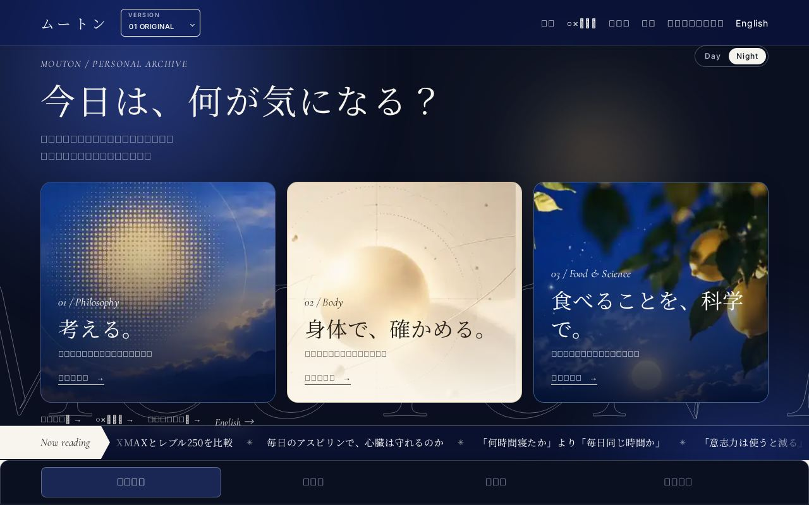
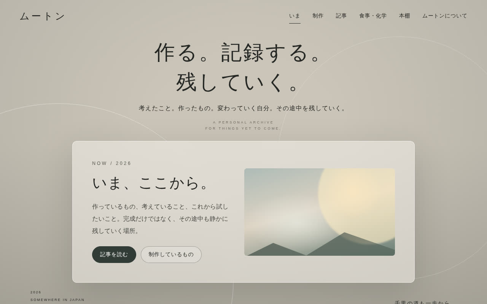
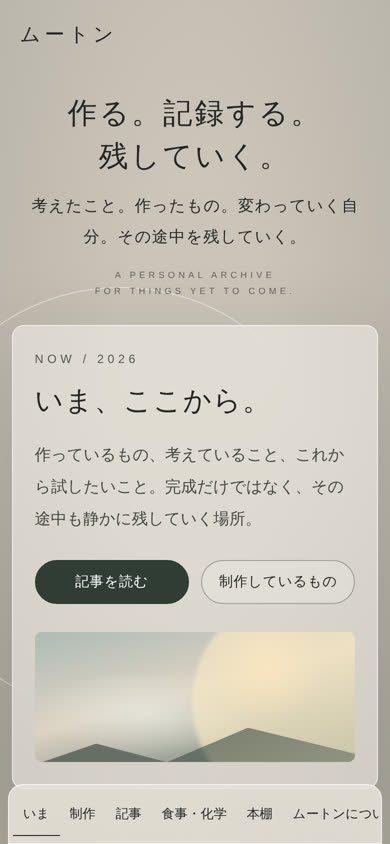
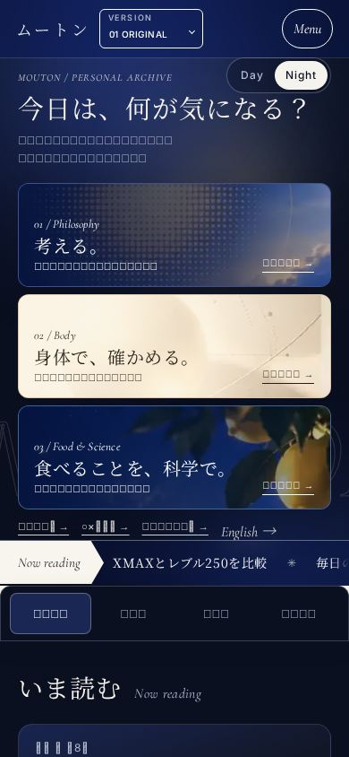
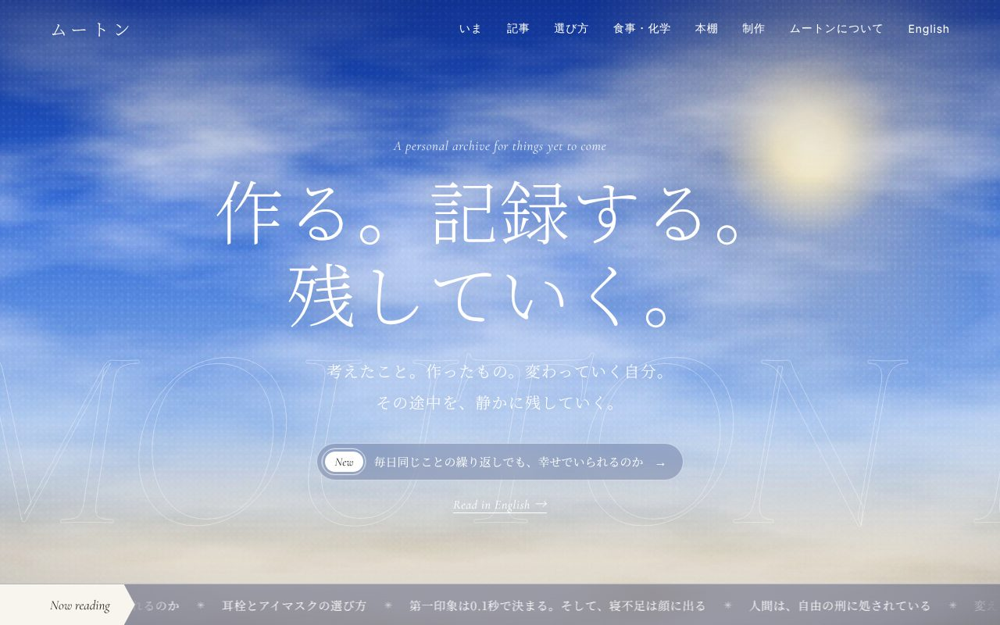
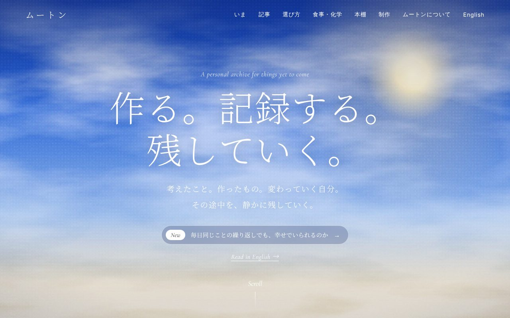
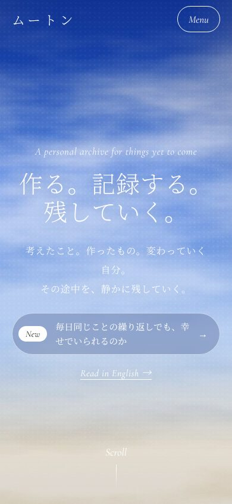
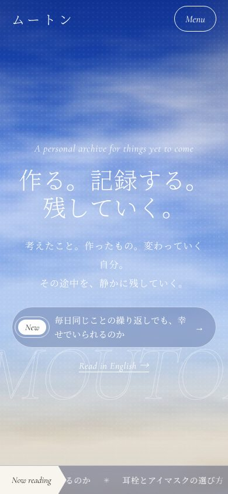
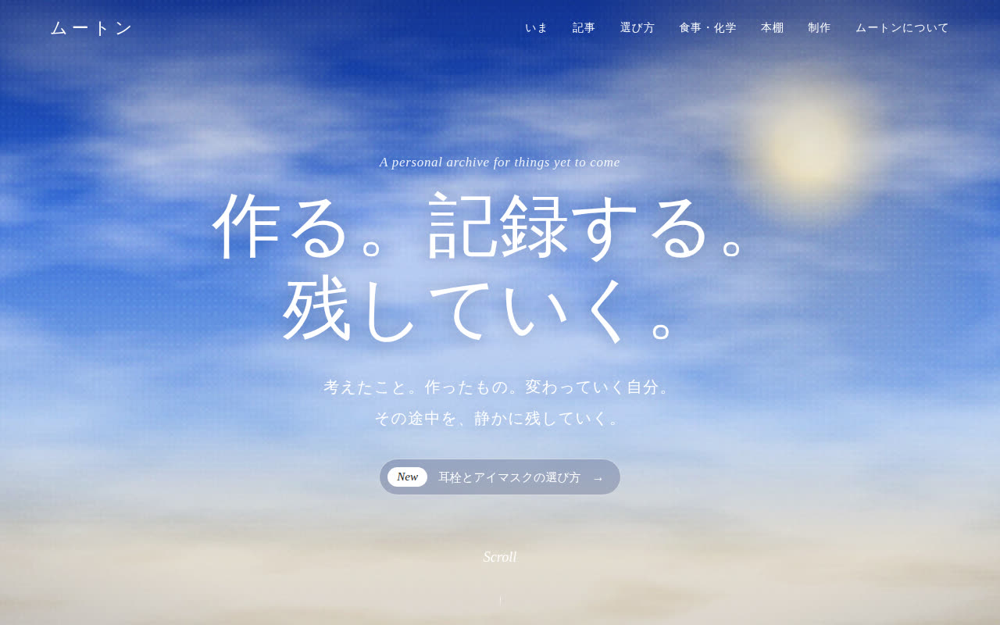
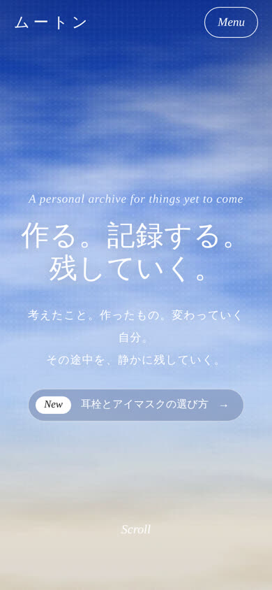

01 / START
まず、自分の基地を作る。
記事と制作の記録を、同じ場所に置くためのサイトを作り始めた。派手な機能より、書き続けられる土台を優先。
PROJECT 003 / WEB / このサイト
書いたものと作ったものを、1か所に。
MOUTONは、記事と制作の記録を置く個人サイト。Eleventyで記事を生成し、AIの力も借りながら改善を重ねている。9月末の最初の画面から、10月13日には映画的なオープニングと、哲学・身体・食と科学の3テーマを選べるトップへ変わった。
毎日更新
DESIGN EVOLUTION / 2026.09—10
2026年9月末に作り始めた個人サイト。10月7日の空のトップ、10月13日のオープニング改良と情報整理を経て、3つのテーマから記事を選べる入口になった。完成形というより、少しずつ判断して変えてきた記録。
今のトップを見る記事と制作の記録を、同じ場所に置くためのサイトを作り始めた。派手な機能より、書き続けられる土台を優先。
静かな初期のトップから、青い空を入口にした画面へ。作るだけでなく、どう見せるかを試し始めた。
長いスクロール場面を整理し、まずトップの長さを約63%削減。4つの切り替えタブでおすすめ・クイズ・選び方・記事検索にアクセスできるようにした。白い追従カーソルも削除。
MOUTONのオープニングを約6秒に整え、幕のクロスフェードと冒頭の文字の動きを磨いた。見せたい演出は残しながら、不要な動きは減らした。
トップを哲学・身体・食と科学の3枚のテーマカードに再設計。見出しは動かさず、考える内容と操作する場所がすぐ分かるようにした。
3テーマごとに制作した青・生成り・月夜のアートを軽量化して採用。羊と三日月のアイコンも追加し、入口から小さなアイコンまでMOUTONらしいトーンに統一した。
BEFORE / AFTER


10月はじめのトップ2026.10.13 / 3テーマつまみを左右に動かして見比べる


9月末の制作開始から、空のトップ・4タブ・オープニングの調整を経て、3つのテーマを選ぶ入口へ。画像は制作時点の画面を記録したものです。最新のデザインはトップページをご覧ください。
BEFORE / AFTER


当時の静かなトップ案当時の動きのあるトップ案つまみを左右に動かして見比べる


PR #65で検討した当時のデザイン案です。画像は現在のトップ画面とは異なりますが、演出を新しいNight/Dayトップへ引き継ぎました。
BEFORE / AFTER

10月はじめ10月7日時点つまみを左右に動かして見比べる

落ち着いた灰色の一枚の画面から、空の写真で始まり、スクロールで場面が切り替わるトップへ。「選び方」への入口を一番上に置いた。
01 / 今の状態
02 / 制作の記録
Philosophy / Body / Food & Scienceの3テーマを大きく表示。生成したアートをカード用に調整し、「今日は、何が気になる？」の見出しは静止表示にした（PR #110・#112・#113）。
MOUTONの文字をゆっくり見せてから、幕が滑らかに消える演出に。冒頭のカクつきやフォントの切り替わりを調整した（PR #100・#103・#107・#109）。
白い追従カーソルを削除。トップを約63%短縮して、おすすめ・クイズ・選び方・記事検索をタブにまとめた（PR #98・#99・#101）。
羊と三日月のファビコン、ホーム画面用アイコンを追加した（PR #97）。
ミニトランポリンと、耳栓・アイマスクの選び方を足した。読み物から選び方へのリンクも5本につないだ。
独自ドメイン moutonarchive.com に移った。アクセス解析と Search Console も入れて、読まれ方が見えるようにした。
1本ずつ手で書いていたページを、テンプレートから自動で作る仕組みに移した。AI の社員に仕事を頼み始めた。
自分の基地のような場所を、ようやく形にし始めた。
03 / ほかの制作